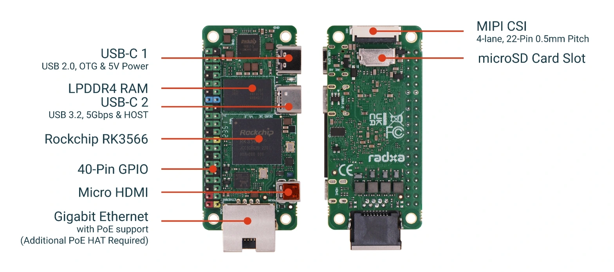

Server
The box that runs Home Assistant and holds every rule. Local only, no cloud, and it has to stay up while the WAN is out. The Thread router is a separate component that plugs into it — it has its own page, its own ID and its own failure mode.
SRV-1 & SRV-2 — Server
Radxa Zero 3E (RK3566 SoC) + 32 GB A2 card + 5 V/3 A USB-C supply, running Debian 13 (Trixie) Minimal and Home Assistant Container under Docker. SRV-1 is the baseline 1 GB model; SRV-2 is the 2 GB benchmarked model. Changing the board, RAM, storage or install method assigns a new component ID and requires a fresh backup/restore validation.

| Part | Search term / Source | Buying Link (India) | Est. | Note |
|---|---|---|---|---|
| Radxa Zero 3E (SRV-1 / SRV-2) | Radxa Zero 3E | Evelta → · Fab.to.Lab → (On hand) | — | Baseline server. Runs HA + border-router service. Reference link saved for spare SBCs. |
| microSD 32 GB (A1/A2) | MicroSD 32GB | Robu.in → (On hand) | — | High-endurance flash storage for HA database and logs. Reference link saved for spare SD. |
| 5 V USB-C supply, 3 A | 5V 3A USB-C | Robu.in → (On hand) | — | Clean, regulated 3A power. Reference link saved if dedicated supply needed later. |
| SRV Accessories Total | — | All server accessories already on hand (₹0 to buy) | ||
Verified Resource Baseline
Tested on the Radxa Zero 3E with Debian 13 Minimal (Armbian vendor 6.1 kernel) running Home Assistant Container via Docker. Measured live under standard idle operations:
| Metric | Measured value | Percentage / Status | Impact on build |
|---|---|---|---|
| HA Container RAM | ~254 MiB | ~13% of 2 GB | Lightweight core container footprint. |
| Total System RAM (OS + HA) | ~564 MiB | ~28% (2 GB) / ~55% (1 GB) | Armbian CLI baseline idles at only ~80–110 MiB. |
| Free / Available RAM | ~1.4 GiB (SRV-2) | ~460 MiB projected (SRV-1) | Ample headroom for otbr-agent (~50–80 MiB). O-09 |
| Swap usage | < 1 MiB | Negligible | Zero disk thrashing or micro-SD wear. |
Debian Minimal + Docker HA uses ~564 MiB total. Even on the 1 GB board (SRV-1), over 400 MiB remains free — more than sufficient for the OpenThread border router daemon. 24-hour USB contention testing remains the only open verification.
Headless Setup Guide — Radxa Zero 3E
Complete reproduction procedure from bare micro-SD card to running Home Assistant instance. Follow each step sequentially.
1. Image Selection & Download
- Target board: Radxa Zero 3E (Rockchip RK3566 quad-core A55, Gigabit Ethernet).
- Distribution: Armbian Debian 13 (Trixie) Minimal (CLI), Rockchip vendor 6.1 kernel.
- Rationale: Idle memory footprint of ~80–110 MiB, zero desktop/display server overhead, and proven vendor 6.1 driver stability for the RK3566 SoC.
Download the image archive from the Armbian Radxa Zero 3 repository (under Minimal / IOT) and decompress the .xz file:
xz -d -k Armbian_*_Radxa-zero3_trixie_vendor_6.1.*_minimal.img.xz2. Flashing the Micro-SD Card (Linux CLI)
Identify the micro-SD card block device on your flashing host:
lsblkAlways flash to the raw device identifier (e.g. /dev/sdb). Never target an individual partition like /dev/sdb1, which will corrupt partition tables.
Unmount any auto-mounted partitions from the card:
sudo umount /dev/sdb* 2>/dev/nullWrite the decompressed image with synchronized hardware flushing:
sudo dd if=Armbian_*_Radxa-zero3_trixie_vendor_6.1.*_minimal.img of=/dev/sdb bs=4M status=progress conv=fsyncWait until dd exits completely and returns to the prompt before disconnecting the card.
3. Network Discovery & First Boot
- Insert the flashed micro-SD card into the Radxa Zero 3E slot.
- Connect an Ethernet cable to your local network switch/router and connect 5 V / 3 A USB-C power.
- Allow 30–45 seconds for first-boot partition auto-expansion and DHCP address acquisition.
Locate the board's IP address by running an ARP/ping sweep across your subnet:
sudo nmap -sn 192.168.88.0/24Establish initial SSH connection as root:
ssh root@<RADXA_IP>Default credentials: password 1234. Follow the on-screen prompt to configure a strong root password.
4. User Configuration & Sudo Privileges
Create a dedicated standard user and configure sudo privileges without root dependency:
# Create operator account and add to sudo group
adduser pannet1
usermod -aG sudo pannet1
# Ensure sudo is installed and configure sudoers rule
apt update && apt install -y sudo
echo "pannet1 ALL=(ALL:ALL) ALL" > /etc/sudoers.d/pannet1
chmod 0440 /etc/sudoers.d/pannet1
# Exit root session
exit5. Base System Update & Docker Engine
Log back into the SBC as the new standard user:
ssh pannet1@<RADXA_IP>Update repositories and installed packages:
sudo apt update && sudo apt upgrade -yInstall upstream Docker Engine using the official convenience script:
curl -fsSL https://get.docker.com -o get-docker.sh
sudo sh get-docker.sh
sudo usermod -aG docker $USER
newgrp docker6. Deploy Home Assistant Container
Create the host directory for persistent Home Assistant configuration:
mkdir -p ~/homeassistant/configDeploy the production container with host networking and privileged hardware access:
docker run -d \
--name homeassistant \
--privileged \
--restart=unless-stopped \
-e TZ=Asia/Kolkata \
-v ~/homeassistant/config:/config \
--network=host \
ghcr.io/home-assistant/home-assistant:stable| Parameter | Purpose in this build |
|---|---|
--privileged | Grants the container direct access to host USB serial devices — necessary for the ESP32-H2 Thread radio in Stage 3 (BR-1). |
--network=host | Required for mDNS discovery, SSDP, Matter/Thread device discovery, and zero-NAT latency to local Wi-Fi switchboards. |
-e TZ=Asia/Kolkata | Sets container clock to local Indian Standard Time — critical for bedroom time-based rules (BR-01). |
-v ~/homeassistant/config:/config | Binds persistent configs, database, and automations to host storage for easy off-device backup. |
--restart=unless-stopped | Ensures HA restarts automatically on power restore after an outage. |
7. Verification & Access
Verify container health and resource consumption:
# Check container CPU and memory
docker stats homeassistant --no-stream
# Check host physical memory
free -hOpen your browser on the local network and navigate to:
http://<RADXA_IP>:8123Complete initial setup wizard. Then unplug the router's WAN / internet cable and confirm the Home Assistant web interface remains fully responsive. If it stalls or fails to load, resolve DNS or timeout issues before proceeding to Stage 3.